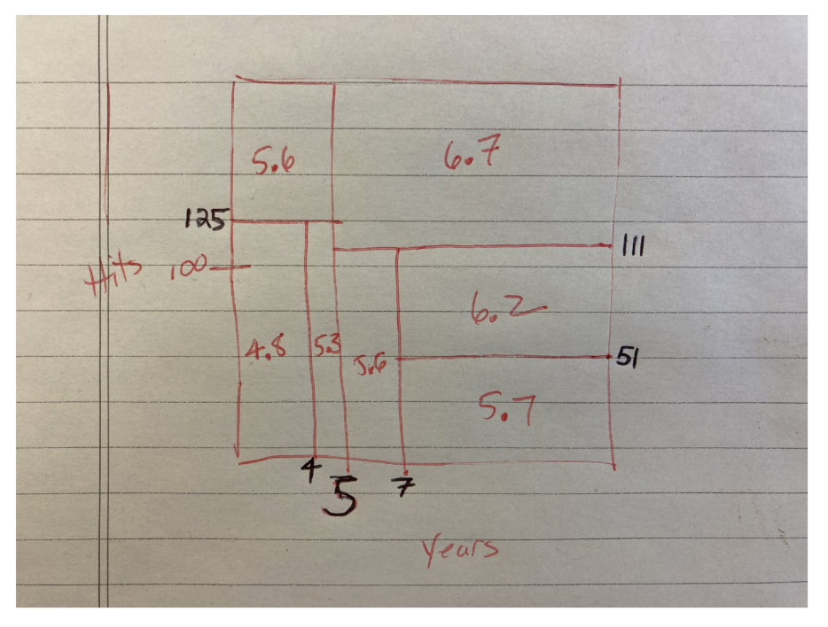

# calling the function
alt_viz <- function(mod, type = 1) {2 Methods
In this section, we’ll walk through the methodology of creating the alternative visualization function in R. The goal is to provide both a broad overview of the approach to creating this function, as well as provide a specific step-by-step explanation of the function’s underlying code. It’s pretty long, but bear with me!
2.1 Coding Approach
Presumably, there are many possible ways to go about creating this alternative visualization function. So where should we start? When looking at the decision splits in the sample alternative visualization, there seemed to really be two different ways we could go about recreating this graph.
2.1.1 Approach 1
First, we could think about the splits as being created by horizontal and vertical lines with each line representing a decision split. If we were careful to truncate each line so that it only spans the region where the corresponding split condition applies, we can use these boundaries to define predictions regions, which we could then label with the prediction value. This method seemed somewhat challenging to implement in R, however – especially considering that we’d need to be able to effectively truncate each line.
2.1.2 Approach 2
The second approach, then, is to think about each of the prediction regions as rectangles. Each of these rectangles would have coordinates defined by the minimum and maximum values of the predictor variables that satisfy the split conditions leading to a particular leaf. For example, if we look at the sample alternative visualization with the prediction 5.3, we can see that the minimum x-value that would satisfy the prediction is 4 years and the maximum value is 5 years. Similarly, the minimum y-value that would satisfy the prediction is 0 hits and the maximum value is 125 hits. This, in turn, gives us coordinates of a rectangle – (4, 0), (4, 125), (5, 0), and (5, 125) – that represents the prediction region. In other words, by tracing the sequence of decision rules for each leaf node, we can derive the exact bounds of the region it occupies in the predictor space – and subsequently use those bounds to draw the rectangle and assign its predicted value.
 That is, we begin with the individual leaf nodes and their corresponding predicted values. Then, after examining the split conditions that lead to each leaf, we determine the bounds of each predictor variable we can use to define the coordinates of the rectangles used in the graph. This contrasts with a more “top-down” approach, where one might start with the decision splits and work forward to identify the resulting prediction regions.
2.2 Coding the Function
With this general approach in mind, we ultimately know what goal we are aiming for: some sort of geom_rect (rectangle) function that makes a bunch of rectangles based on the coordinates set by the decision split bounds. Thus, we first need to somehow extract each prediction region’s decision split bounds and each region’s corresponding prediction. Before we begin though, we need to do a little bit of “housekeeping” to set up the function and get the information that we need.
2.2.1 Housekeeping
The first step is to simply set up the function. We will call our function alt_viz (short for alternative visualization) and it will take two inputs. The first input, mod, is a regression model that is created using the the rpart function in the rpart package – thus making the rpart package a requirement for using the function. The second input, type, is a numeric value that corresponds to 1, 2, or 3. We’ll talk about this more later, but it allows the user to control what type of output they receive from running the function. This is the first line of code of our function:
Now, we need to figure out how to extract the necessary information from the model that is created using the rpart function. We know that the model created contains the information needed to build the classic decision tree – since the rpart.plot function, which makes these conventional visualizations, also uses this model. This is where we need to be a little creative. A little bit of research tells us that there’s a function called path.rpart, which retrieves a sequence of split conditions – that is, the decision rules – that lead from the root of the tree to each specified node. For example, using the same baseball data that was used in the sample alternative visualization, the result of the path.rpart function for one (leaf) node looks like this:
node number:27
root
Years>=4.5
Hits< 117.5
Years>=6.5
Hits>=50.5
This sequence should tell us everything that we need to know about the split decisions for this particular (leaf) node: after the root, if the number of years a player has been playing baseball is greater than or equal to 4.5 years, and they have fewer than 117.5 hits, and have been playing for at least 6.5 years, and have 50.5 or more hits, then they fall into this specific prediction region. This mean that we can create the bounds of the rectangular prediction region for this node – and other nodes – if we do the following:
Turn the sequencing rules into a vector that contains the minimum and maximum values for the
HitsandYearspredictors. For example, we know that the minimum value forHitsin this prediction region is 50.5 and the maximum value is 117.5. Some additional points to consider:If there is more than one lower or upper bound conditions, like \(Years \geq 4.5\) and \(Years \geq 6.5\), then we need to keep the more restrictive condition – \(Years \geq 6.5\), in this instance – since it defines a narrower region.
If there is no explicitly specified inequality, like \(Years < {}...{}\), then we should assume that there is no upper or lower constraint in that direction and, thus, should fall back on the reasonable default of the maximum or minimum value of the dataset.
If we are interested in generalizability to new datasets (which we are), then we need to design the code logic such that it doesn’t rely on any specific dataset predictor names. Rather, it should flexibly adapt to new trees and new data.
Identify only the leaf nodes and have the
path.rpartfunction return the sequence of split conditions that lead to each one.Apply a function that applies what the first bullet point suggests to all of our leaf nodes. This will create a list for each leaf node and its relevant rectangle boundaries for their prediction regions.
We can take these principles and turn them into code. But first, just a little bit more housekeeping.
2.2.2 More Housekeeping
As we saw, we need to design our code so that it’s not reliant on one specific dataset. This means writing it in a way that dynamically adapts to different variable names, ranges, and structures without hard-coded assumptions. The next couple of lines of the function executes on this:
# extracting model specific information
names <- unique(mod$frame$var)
names <- names[names != "<leaf>"]
# account for the case where only one predictor is important
if (length(names) == 1) {
xname <- names[1]
yname <- NULL
} else {
yname <- names[1]
xname <- names[2]
}
# find the name of the original dataset
modelname <- mod$call$dataThe function first extracts the list of names of the predictors (like Years and Hits) by looking at what variable names are produced. We also need to remove the <leaf> name from this list as it’s not a predictor.
Then, we want to account for the fact that even if we include two predictors in our regression model, perhaps only one of them is actually important for splits. The if...else statement assigns the vertical predictor value (yname) to NULL. We’ll deal with this part more later.
Finally, we need to extract the name of the original dataset that the model used. As we mentioned, when we have no specified upper or lower constraint, then model will default to the maximum or minimum value of the dataset. This means we need to be able to access the original dataset – which means we need the name of it, too.
Next, we need to identify only the leaf nodes and have the path.rpart function return the sequence of split conditions that lead to each one. We do that with the following code:
# finding the sequences of the leaf nodes
leaf <- rownames(mod$frame[mod$frame$var == "<leaf>", ])
paths <- path.rpart(mod, nodes = leaf, print.it = FALSE)The code uses the frame of the model created using rpart in order to identify which numbered nodes are leaf nodes. Then, we store the sequences (like the one we saw earlier) of leaf node information.
2.2.3 Writing and Running a Function to Create Bounds
Having done this, we can now define a helper function called get_bounds that takes a list of decision split conditions (for a single leaf node in a decision tree) and returns the rectangular boundaries – the minimum and maximum values – for the two predictor variables involved.
# function to create bounds
get_bounds <- function(leaf_paths) {
data <- get(modelname)
xvals <- data[[xname]]
if (!is.null(yname)) {
yvals <- data[[yname]]
} else {
yvals <- rep(1, length(xvals))
}
x_min <- ifelse(min(xvals) >= 0, 0, min(xvals)) ; x_max <- max(xvals)
y_min <- ifelse(min(yvals) >= 0, 0, min(yvals)) ; y_max <- max(yvals)
for (i in leaf_paths) {
i <- gsub(" ", "", i)
if (grepl(paste0("^", xname, "<"), i)) x_max <- round(min(x_max, as.numeric(sub(paste0(xname, "<"), "", i))), 1)
if (grepl(paste0("^", xname, ">="), i)) x_min <- round(max(x_min, as.numeric(sub(paste0(xname, ">="), "", i))), 1)
if (!is.null(yname)) {
if (grepl(paste0("^", yname, "<"), i)) y_max <- round(min(y_max, as.numeric(sub(paste0(yname, "<"), "", i))), 1)
if (grepl(paste0("^", yname, ">="), i)) y_min <- round(max(y_min, as.numeric(sub(paste0(yname, ">="), "", i))), 1)
}
}
return(c(x_min, x_max, y_min, y_max))
}That is, we begin with the individual leaf nodes and their corresponding predicted values. Then, after examining the split conditions that lead to each leaf, we determine the bounds of each predictor variable we can use to define the coordinates of the rectangles used in the graph. This contrasts with a more “top-down” approach, where one might start with the decision splits and work forward to identify the resulting prediction regions.
The function first pulls the original dataset used to fit the model and extracts the values of the predictor variables. It assigns these to xvals and, if a second predictor is needed, to yvals; otherwise, it fills yvals with a constant (1, for the sake of simplicity) so that the function can still compute rectangular regions in the case that only one predictor is important.
Next, it initializes x_min, x_max, y_min, and y_max using the observed ranges of the predictor data. If all values are non-negative, it sets the minimum to 0 to create cleaner, more intuitive axis bounds; otherwise, it uses the actual minimum from the dataset.
The for loop then iterates through each condition in the decision path for a given node. For each of the two predictor variables, it looks for one of two possible inequality types: \(\geq\) or \(<\). It strips out spaces for each condition and checks whether each condition applies to the x or y variable, updating the relevant minimum or maximum bound accordingly. For example, a condition like \(x \geq 5\) will raise x_min. If there is more than one lower or upper bound condition, it keeps the more restrictive one (because each additional condition in the path further narrows the region, and the most recent condition in the sequence overrides any earlier ones). The function finally returns the vector that we need with the rectangular region’s bounds for a given leaf node.
With our helper function written, we finally apply it to all of the paths of the leaf nodes. This creates a list.
# apply the helper function
bounds_list <- lapply(paths, get_bounds)2.2.4 Cleaning Up the Bounds Data Frame
Now that we have identified the bounds of each prediction region, the most challenging part of writing this function is complete. We just need to get these bounds into a data frame that we can then ask ggplot to graph for us. It might be helpful, then, to think about what we need this data frame to look like before we begin creating it.
To create our alternative visualization, we would like to use the geom_rect function which, according to the ggplot2 Cheat Sheet, takes the following format:
geom_rect(aes(xmin = ..., xmax = ..., ymin = ..., ymax = ..., fill = ...)
Therefore, for each individual leaf node – corresponding to one rectangular region – we would like to plot the x_min, x_max, y_min, and y_max that we created with the helper function (note the difference between xmin for the plot and x_min from the helper function). As such, we should have xmin, xmax, ymin, and ymax be individual column names in this cleaned data frame. Then, we also need an additional column in the data frame with the prediction value of each leaf node which we’ll use for both the fill color and the prediction label for each rectangular region. The following code executes on these ideas:
# create a data frame with the bounds
bounds_df <- as.data.frame(do.call(rbind, bounds_list))
colnames(bounds_df) <- c("xmin", "xmax", "ymin", "ymax")
# add in the prediction values
leaf_preds <- mod$frame[mod$frame$var == "<leaf>", "yval"]
regions <- bounds_df |> mutate(pred = round(leaf_preds, 1)) |> tibble()The first step is simply to turn the list that we made previously with the lapply function into a data frame. We then rename the columns. Finally, we extract predictions (stored as yval) from the leaf nodes by calling the model’s frame (which contains information about every node in the tree) and add these to the data frame.
2.2.5 Plotting the Alternative Visualization
We’re very close to having our alternative visualization for decision trees! The final major step is to take the data frame that we just created and using geom_rect to create the plot. The code for the plot is shown below:
# plotting the alternative visualization
plot <- ggplot(regions) +
geom_rect(aes(xmin = xmin, xmax = xmax, ymin = ymin, ymax = ymax, fill = pred), color = "black", alpha = 0.5) +
geom_text(aes(x = (xmin + xmax)/2, y = (ymin + ymax)/2, label = pred), size = 3.5) +
labs(x = xname, y = ifelse(is.null(yname), "", yname)) +
theme_minimal() +
theme(legend.position = "none")Besides using the values in the columns from the data frame (called regions) to draw the rectangular prediction regions, the plot tries to make things visually appealing. Each rectangle is lightly color-filled based on its prediction and is labeled with that prediction in the center (finding the center of the rectangle by taking the average of the minimum and maximum values of each predictor). The x-axis and y-axis are labelled appropriately based on the predictor. The final result is our alternative visualization for decision trees!
2.2.6 Printing the Results
The very last step in creating this function is to control what returned to the user. That is, we want to give the user some flexibility: perhaps some users want alternative visualization, while others want just the data frame that contains the predictions and minimum and maximum values. The following code executes how results are printed:
# control the printing of results
if (type == 1) {
print(plot)
} else if (type == 2) {
print(regions)
} else if (type == 3) {
print(plot); print(regions)
} else {
stop("Invalid `type` argument. Must be 1 (plot), 2 (data), or 3 (both).")
}
}While the default response for type is 1 (getting them just the alternative visualization plot), a user can change the type argument when using the function to get either just the data frame or both the data frame and plot if they enter 2 or 3, respectively. The if...else statements help to correctly output the user’s choice and prints an error message if a user puts in a value that doesn’t equal 1, 2, or 3.
2.2.7 Final Alternative Visualization Code
If this step-by-step explanation of the alternative visualization function made it hard to picture how everything fits together – fear not! Below is the full code for the complete function, shown uninterrupted.
alt_viz <- function(mod, type = 1) {
names <- unique(mod$frame$var)
names <- names[names != "<leaf>"]
if (length(names) == 1) {
xname <- names[1]
yname <- NULL
} else {
yname <- names[1]
xname <- names[2]
}
modelname <- mod$call$data
leaf <- rownames(mod$frame[mod$frame$var == "<leaf>", ])
paths <- path.rpart(mod, nodes = leaf, print.it = FALSE)
get_bounds <- function(leaf_paths) {
data <- get(modelname)
xvals <- data[[xname]]
if (!is.null(yname)) {
yvals <- data[[yname]]
} else {
yvals <- rep(1, length(xvals))
}
x_min <- ifelse(min(xvals) >= 0, 0, min(xvals)) ; x_max <- max(xvals)
y_min <- ifelse(min(yvals) >= 0, 0, min(yvals)) ; y_max <- max(yvals)
for (i in leaf_paths) {
i <- gsub(" ", "", i)
if (grepl(paste0("^", xname, "<"), i)) x_max <- round(min(x_max, as.numeric(sub(paste0(xname, "<"), "", i))), 1)
if (grepl(paste0("^", xname, ">="), i)) x_min <- round(max(x_min, as.numeric(sub(paste0(xname, ">="), "", i))), 1)
if (!is.null(yname)) {
if (grepl(paste0("^", yname, "<"), i)) y_max <- round(min(y_max, as.numeric(sub(paste0(yname, "<"), "", i))), 1)
if (grepl(paste0("^", yname, ">="), i)) y_min <- round(max(y_min, as.numeric(sub(paste0(yname, ">="), "", i))), 1)
}
}
return(c(x_min, x_max, y_min, y_max))
}
bounds_list <- lapply(paths, get_bounds)
bounds_df <- as.data.frame(do.call(rbind, bounds_list))
colnames(bounds_df) <- c("xmin", "xmax", "ymin", "ymax")
leaf_preds <- mod$frame[mod$frame$var == "<leaf>", "yval"]
regions <- bounds_df |> mutate(pred = round(leaf_preds, 1)) |> tibble()
plot <- ggplot(regions) +
geom_rect(aes(xmin = xmin, xmax = xmax, ymin = ymin, ymax = ymax, fill = pred), color = "black", alpha = 0.5) +
geom_text(aes(x = (xmin + xmax)/2, y = (ymin + ymax)/2, label = pred), size = 3.5) +
labs(x = xname, y = ifelse(is.null(yname), "", yname)) +
theme_minimal() +
theme(legend.position = "none")
if (type == 1) {
print(plot)
} else if (type == 2) {
print(regions)
} else if (type == 3) {
print(plot); print(regions)
} else {
stop("Invalid `type` argument. Must be 1 (plot), 2 (data), or 3 (both).")
}
} # end of the function